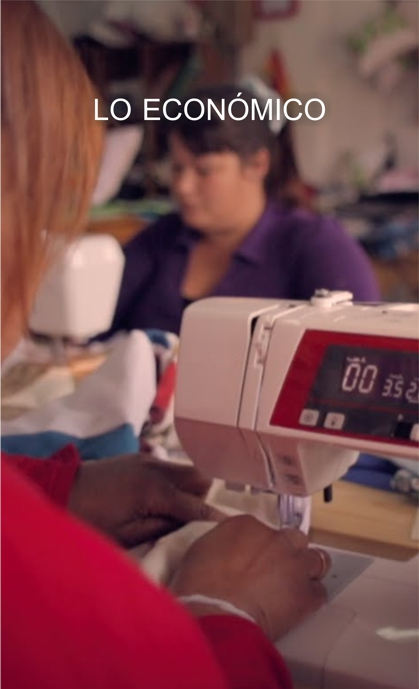

-
NUESTROS
OBJETIVOSNUESTROS OBJETIVOS
Nos proponemos crear un espacio para la investigación, el diseño y la elaboración de políticas públicas, programas y proyectos sociales. Al mismo tiempo, generar un ámbito para la formación de “cuadros integrales”, personas con vocación por lo público, con una preparación de excelencia desde el punto de vista técnico y con capacidad de gestión en el Estado.
-
NUESTRO
EQUIPO -
EN QUE
CREEMOSEn que creemos
En la política como herramienta de mejoramiento de la calidad de vida y la construcción de una sociedad más justa y equitativa.
En la necesidad de jerarquizar el aspecto técnico en las respuestas políticas a las diferentes problemáticas a abordar (económica, social) para dotarlas de efectividad, coherencia entre sí y consistencia a lo largo del tiempo.
QUE NOS OCUPA ...
-
LO INSTITUCIONAL
Trabajamos por la construcción de un Estado capaz de constituirse en un agente de desarrollo eficaz, bien calificado para el diseño y formulación de políticas públicas; Pretendemos un sector público capaz de dirimir los conflictos de intereses entre los actores sociales, poniendo al abrigo de esas tensiones un pacto social de acumulación y distribución que beneficie a todos. Buscamos un Estado capaz de privilegiar el largo plazo, sepa planificar con el bienestar general como horizonte, con vocación de servicio. Un sector público eficiente, moderno y al servicio de la gente.
-
LO SOCIAL
Estamos obsesionados con la tarea de estudiar las políticas que permitan garantizar efectivamente el ejercicio de una ciudadanía integral, que implique que todos los habitantes de la provincia tengan acceso una salud plena, una educación de calidad, la posibilidad de progresar a partir del empleo digno y una seguridad que nos cuide a todos.
-

LO ECONOMICO
Buscamos contribuir a una provincia próspera, con oportunidades laborales para todos, en la cual el bienestar esté asociado a la productividad; Queremos ayudar a construir un Chaco en el que el sector privado sea el motor del empleo y de la actividad económica, y un sector público capaz de crear las condiciones para que esto sea posible; Aspiramos a una provincia insertada al mundo como exportador de bienes y servicios con alto valor agregado, con desarrollo tecnológico y científico.
-->
DONDE ENCONTRARNOS
Av. Italia 1435, Resistencia, Chaco, Argentina
Teléfono: (0362) 457 0129 E-mail: fundacion.chaco.futuro@gmail.com
Vivimos en el mundo cuando amamos. Sólo una vida vivida para los demas merece la pena ser vivida.
No esperes a los dirigentes o líderes; hazlo tu solo, de persona a persona.
La vida es un tesoro precioso, pero solo lo descubrimos si lo compartimos con los demás.
El precio de desentenderse de la política es el ser gobernado por los peores hombres.
Entrar en política es una obligación. Con la política no se puede hacer como hizo Pilatos, lavarse las manos. La política es una de las formas más grandes de la Caridad. Es un deber trabajar por el Bien Común.